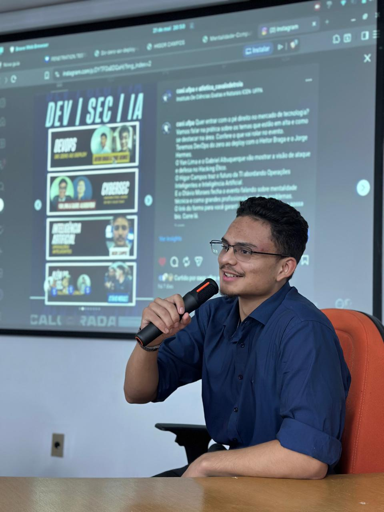

Estudante de Sistemas de Informação atuante em monitoramento de segurança e suporte de infraestrutura. Tenho foco na integração entre a automação de processos operacionais e a defesa ativa de redes, unindo a visão técnica de desenvolvimento com a eficiência exigida em um centro de operações de segurança.
Material prático voltado para Detecção e Resposta (MDR), mapeando a anatomia de um ataque antes da criptografia. O estudo explora 5 pilares de verificação proativa, incluindo escalonamento de privilégios no Active Directory, exclusão de backups locais e correlação de eventos no Wazuh.
Ler material completo ➔Tags: MDR, Threat Hunting, Active Directory, Wazuh
Documentação técnica focada no rastreamento e neutralização de ameaças silenciosas. A cartilha aborda a dinâmica de Session Hijacking (burla de MFA), identificação de IoCs em endpoints, anomalias de rede via XDR/SIEM e playbooks ágeis de resposta a incidentes.
Ler material completo ➔Tags: Infostealers, Threat Intel, Playbook, XDR
Laboratório prático focado em transformar conhecimento teórico em defesa ativa. O projeto consiste na estruturação e validação de processos, metodologias de monitoramento e ferramentas de segurança utilizando o SIEM Wazuh para resposta a incidentes corporativos.
Ler material completo ➔Tags: Wazuh, SIEM, Laboratório, Resposta a Incidentes
Operação de SIEM (Wazuh), Análise de Logs, Gestão de Vulnerabilidades, Threat Hunting e Resposta a Incidentes.
Configuração e gestão de firewall (FortiGate), implementação de VPNs/VLANs, Roteamento e administração de Active Directory.
Desenvolvimento de scripts em Python (Pandas) e Shell Script para automação de rotinas de backup, coleta de dados e deploy com Docker.